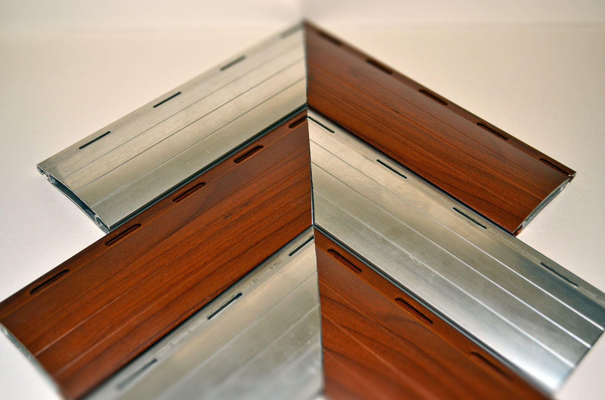
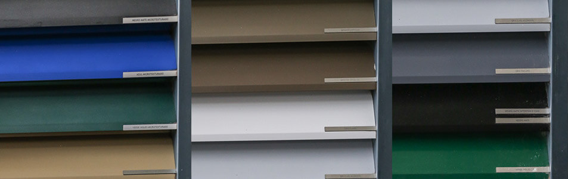
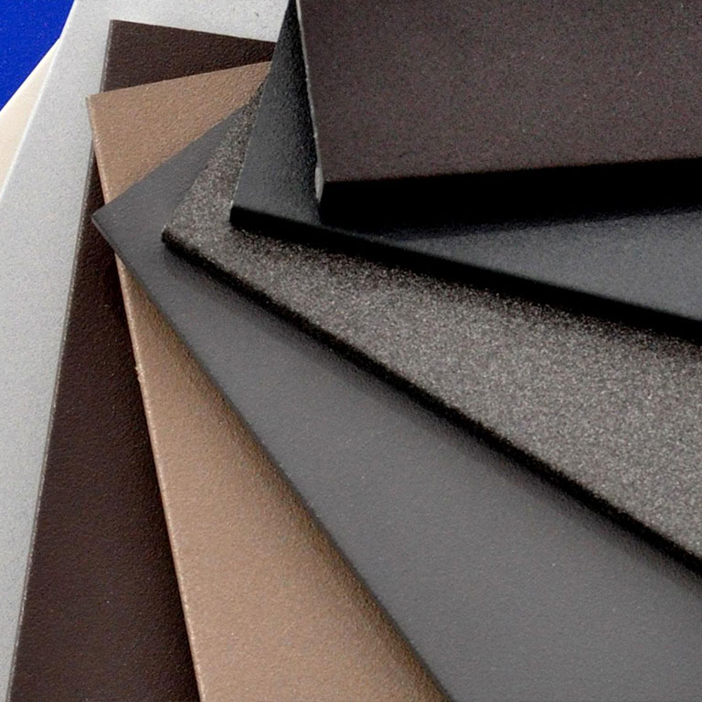

Calidad y Comfort
En AlumTech te ofrecemos una extensa variedad de colores y tratamiento para tus aberturas.
Simil Madera
Pintura
Pintura microtexturado
Calidad del Aluminio

En AlumTech trabajamos con perfiles de aluminio de la mejor calidad, con Alineación 6063, material directamente fabricado de Aluar Elaborados.